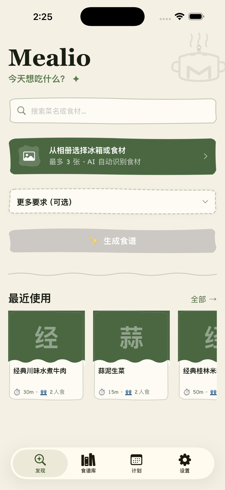

Your private
AI chef,
always ready.
Mealio transforms fridge ingredients, cravings, and pantry staples into structured, step-by-step recipes in under 3 seconds. Featuring an ergonomic direct-manipulation cooking mode, multimodal visual Copilot, and 3-week smart meal planning — completely private and local-first.

Engineered for real kitchens.
Experience how Mealio’s native iOS architecture streamlines cooking from first craving to final bite.
Snap what's in your fridge. We handle the rest.
Pick photos directly from your camera roll or describe what you have. Gemini 3.5 Flash extracts recognized ingredients with confidence scoring, lets you confirm tags, and streams tailored recipes in seconds — complete with prep and cooking timelines.
- ✓ Out-of-process PhotosPicker with zero permission popups
- ✓ Background recipe generation keeps the app responsive
- ✓ Robust dual-stage JSON parser prevents broken recipes
Tactile gestures engineered for messy hands.
Step through recipes effortlessly while holding spatulas or cooking with wet hands. Cards respond to your finger with rotational tilt, authentic rubber-band boundary resistance, and tactile haptic clicks when advancing steps.
- ✓ Dynamic tilt physics proportional to drag displacement
- ✓ Light tactile haptics confirm every step transition
- ✓ Distraction-free full-screen layout with oversized controls
A digital sous-chef who can see your pan.
Questioning doneness? Snap a photo of your skillet and the Copilot evaluates sear, color, and texture. Ask about heat adjustments or substitutions by voice — all while keeping your hands free.
- ✓ Recipe-aware context for precise step troubleshooting
- ✓ Mandatory food safety temperature warnings on meat doneness
- ✓ On-device Apple Speech Recognition for zero audio retention
Plan meals across Last, This, and Next Week.
Never stare blankly into your fridge again. Map out breakfast, lunch, and dinner with fluid 3-week navigation. Copy recurring favorites from last week with a single tap, or batch-import from your local recipe library.
- ✓ 1-tap "Copy from Last Week" saves time every Sunday
- ✓ Multi-select import directly from your offline library
- ✓ Automatic rolling cleanup for entries older than 14 days
Visual macro estimates with safety-first transparency.
Review estimated weekly calories, protein, carbohydrate, and fat splits across your planned meals. Clear, non-medical disclosures ensure you make informed lifestyle choices responsibly.
- ✓ Automated macro breakdowns per meal slot and day
- ✓ Prominent non-medical dietary disclaimer banners
- ✓ High-contrast accessible charts exceeding WCAG AAA standards
Everything a modern home chef needs.
From fridge-to-table in seconds. Mealio seamlessly links discovery, execution, and nutrition planning in one fluid loop.
Snap & Generate with Gemini 3.5 Flash
Select fridge or ingredient photos directly from your photo album, or simply describe your cravings. Gemini 3.5 Flash extracts items with confidence filtering and streams structured recipes in under 3 seconds — complete with prep, cook, and finish stages, heat cues, and food safety checkpoints. Even runs seamlessly in the background while you browse.
Multimodal AI · Sub-3s StreamDirect Manipulation Cooking Mode
Experience true direct manipulation in the kitchen. Interactive swipe gestures with live card tilt, boundary rubber-banding, and tactile haptic feedback make navigating steps effortless, even with messy hands.
New in v1.3 · Tactile PhysicsMultimodal AI Kitchen Copilot
Stuck mid-recipe? Ask anything by voice, text, or pan photos. The Copilot maintains full recipe context, suggests ingredient substitutions, and evaluates visual doneness with mandatory meat-thermometer safety cues.
Vision & Voice QA3-Week Smart Meal Planner
Organize breakfast, lunch, and dinner with fluid switching between Last Week, This Week, and Next Week. Copy a full week with one tap, clear schedules, or multi-select recipes directly from your local library.
Upgraded v1.3AI Nutrition Insights Dashboard
Track weekly nutrition at a glance. Mealio estimates calories and macro splits (protein, carbohydrates, and fats) across scheduled meals, paired with clear non-medical health disclosures.
AI Insights DashboardFair Daily Quota & Rewarded Unlocks
Enjoy 2 free recipe generations daily plus visual doneness checks per recipe. Need extra tokens? Watch optional Google AdMob rewarded videos to unlock more generations without recurring subscriptions.
v1.0.2 Feature · No PaywallPrivate Local Recipe Library
Every generated culinary creation is stored directly in your on-device CoreData library. Organize with custom tags, search effortlessly, and cook anytime — 100% offline ready.
100% Offline CapableZero-Account, Local-First Privacy
No registration, no accounts, and no tracking SDKs. System-level PhotosPicker operates out-of-process without permission dialogs on launch. Erase all local data anytime with one tap in Settings.
Privacy by DesignFrom craving to plate in 4 steps.
A cooking loop so smooth it feels natural, powered by structured AI intelligence and local-first data.
Describe or Snap
Choose ingredients from your album or describe dietary preferences like low-sodium, keto, or quick-prep.
Gemini 3.5 Streams
Structured recipes arrive in under 3 seconds with background generation and robust schema parsing.
Cook with Tactile Physics
Swipe through cooking steps with live card tilt and haptics. Consult the Copilot whenever you need a tip.
Plan Across 3 Weeks
Schedule your weekly menu across Last, This, and Next Week. Copy previous weeks with a single tap.
AI you can trust in the kitchen.
Mealio is engineered with Safety-by-Design: every AI response prioritizes food safety and user well-being over pleasing answers.
Doneness Safety Prompts
Recipes for poultry and pork always specify internal temperature checkpoints and doneness indicators. The AI never bypasses core food safety standards.
Mandatory AI Disclaimers
Every visual doneness check provides a mandatory, non-dismissible safety reminder that AI vision cannot substitute for a calibrated food thermometer.
Local-First Data Storage
Your recipes and meal schedules are stored exclusively on your device via CoreData. Rebuildable image caches are excluded from iCloud backups to save space.
Explicit User Confirmation
The Copilot can suggest culinary modifications, but it will never silently modify your recipe steps or ingredients without your explicit confirmation.
Non-Medical Nutrition Approximations
Calorie and macronutrient estimates are clearly designated as informational approximations, not medical prescriptions. Mealio is a culinary companion.
Out-of-Process Photo Privacy
Photo selection runs via Apple's out-of-process PhotosPicker. The app requires zero permission dialogs on launch and only accesses the photos you explicitly select.
Got questions? We've got answers.
Everything you need to know about privacy, quotas, and cooking with Mealio.
Yes! Mealio is free to download on the Apple App Store. Every user receives a daily allowance of complimentary AI recipe generations and vision checks. If you need additional tokens on the same day, you can choose to watch an optional rewarded video — zero forced paywalls or recurring subscriptions.
No. Mealio requires zero sign-up, zero email, and zero login. You can launch the app and start generating recipes immediately. All your saved meals and calendars are stored locally on your iPhone using Apple's CoreData framework.
Mealio uses Apple's native, out-of-process PhotosPicker view service. The app never asks for permission to scan your entire photo library on launch. The application only accesses the specific image you deliberately tap and confirm for ingredient identification.
Yes! All previously generated recipes in your personal library and all scheduled meals in your 3-week planner are saved on-device and function 100% offline. Only generating brand-new recipes from Gemini and streaming Copilot answers require an internet connection.
Gemini 3.5 Flash evaluates surface color, searing, and texture to provide culinary suggestions. However, because internal meat temperatures cannot be visually verified through cameras, Mealio enforces non-dismissible safety banners reminding cooks that meat thermometers are required for food safety on poultry and pork.
Start cooking smarter
today.
Mealio is free to download on the App Store. Generate your first AI recipe in under 60 seconds.
Requires iOS 17.0 or later · Designed for iPhone · Free to download with daily fair-use quota